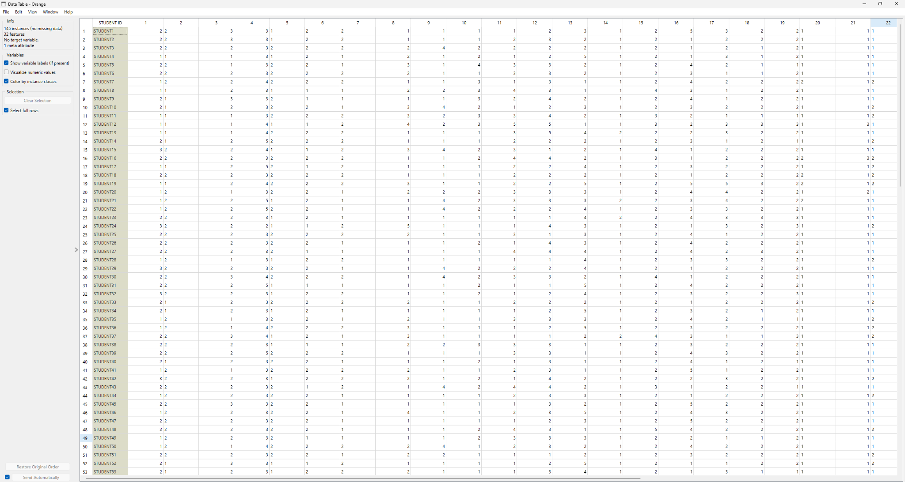
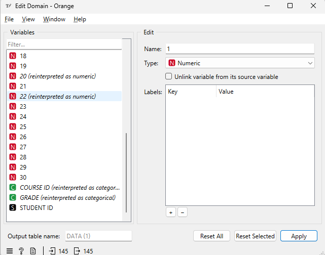
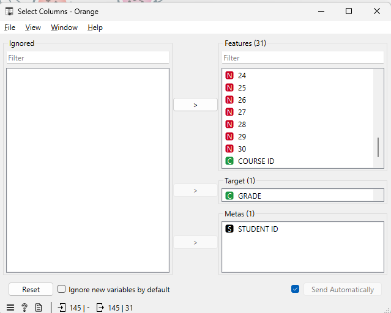
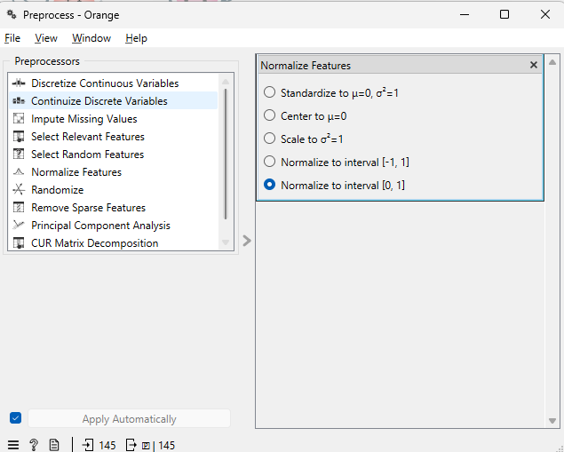
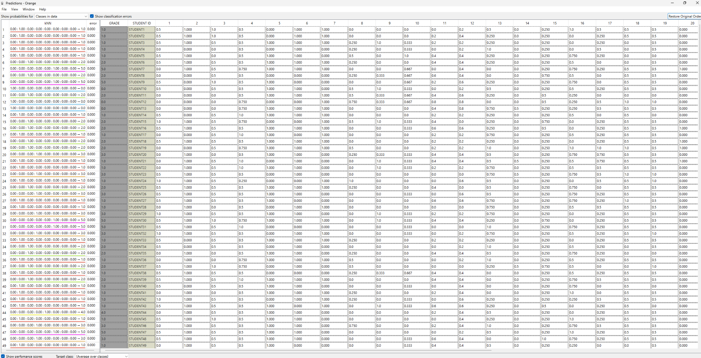
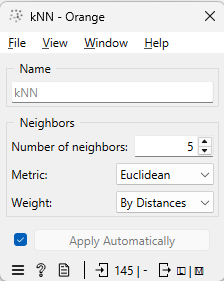
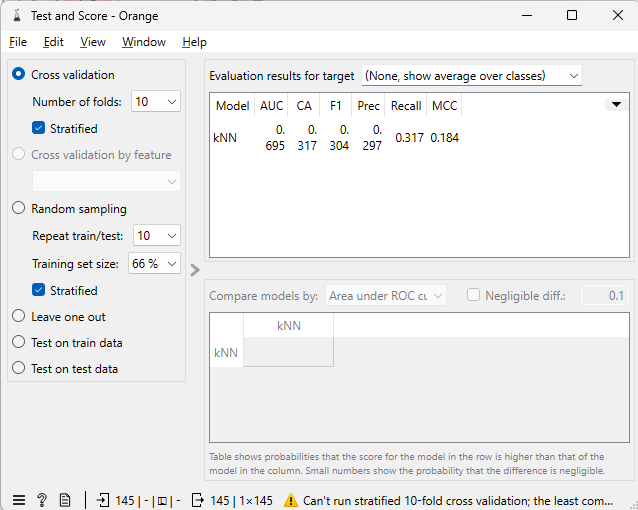
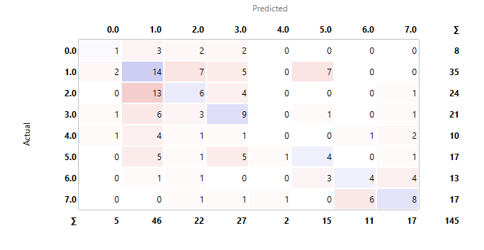

Analisis Dataset Higher Education Students Performance Evaluation Menggunakan KNN di Orange#
1. Ringkasan#
Dokumen ini menjelaskan:
sumber dan tujuan dataset;
arti seluruh kolom dan kode nilainya;
alasan penggunaan metode K-Nearest Neighbor (KNN);
penjelasan seluruh tangkapan layar workflow Orange;
interpretasi hasil evaluasi;
kesalahan metodologis yang perlu diperbaiki agar hasil evaluasi lebih sahih.
Dataset yang dianalisis adalah Higher Education Students Performance Evaluation dari UCI Machine Learning Repository. Dataset ini memiliki 145 baris data mahasiswa, 31 fitur prediktor, tidak memiliki nilai kosong, dan digunakan untuk tugas klasifikasi. Targetnya adalah GRADE, yaitu kategori nilai akhir mahasiswa.
Hasil model KNN pada tangkapan layar:
Metrik |
Nilai |
|---|---|
AUC |
0,695 |
CA / Accuracy |
0,317 |
F1-score |
0,304 |
Precision |
0,297 |
Recall |
0,317 |
MCC |
0,184 |
Model memprediksi benar 46 dari 145 data, sehingga akurasinya adalah:
[ \frac{46}{145}=0{,}3172\approx31{,}7% ]
Kelas terbanyak adalah GRADE = 1 sebanyak 35 data atau 24,14%. Karena itu, baseline sederhana yang selalu menebak kelas terbanyak memperoleh akurasi 24,14%. KNN mencapai 31,7%, sekitar 7,56 poin persentase lebih tinggi, tetapi performanya masih belum kuat.
2. Tentang UCI Machine Learning Repository#
UCI Machine Learning Repository adalah kumpulan basis data, teori domain, dan generator data yang digunakan komunitas machine learning untuk analisis empiris terhadap algoritma. Repositori ini dibuat pada 1987 sebagai arsip FTP oleh mahasiswa PhD UCI, David Aha, dan kemudian banyak digunakan oleh pelajar, pengajar, serta peneliti.
Sumber resmi:
3. Identitas dan Tujuan Dataset#
Aspek |
Keterangan |
|---|---|
Nama |
Higher Education Students Performance Evaluation |
Bidang |
Social Science |
Tugas |
Classification |
Jumlah baris |
145 mahasiswa |
Jumlah fitur |
31 |
Target |
GRADE |
Nilai kosong |
Tidak ada |
Tahun pengumpulan |
2019 |
Sumber responden |
Mahasiswa Faculty of Engineering dan Faculty of Educational Sciences |
Tujuan |
Memprediksi performa akhir semester mahasiswa menggunakan teknik machine learning |
UCI membagi pertanyaan menjadi tiga kelompok:
fitur 1–10: pertanyaan pribadi;
fitur 11–16: pertanyaan keluarga;
fitur 17–30: kebiasaan pendidikan atau akademik;
COURSE ID: identitas mata kuliah;GRADE: kelas target.
4. Struktur Data#
File berisi 33 kolom secara keseluruhan:
1 kolom identitas:
STUDENT ID;30 kolom pertanyaan:
1sampai30;1 kolom mata kuliah:
COURSE ID;1 kolom target:
GRADE.
Jumlah 31 fitur di halaman UCI berasal dari:
[ 30\ \text{pertanyaan} + 1\ \text{COURSE ID}=31\ \text{fitur} ]
STUDENT ID bukan fitur prediktor dan GRADE adalah target.
5. Kamus Seluruh Variabel#
5.1 Identitas#
Kolom |
Arti |
Peran yang disarankan |
|---|---|---|
STUDENT ID |
Identitas mahasiswa |
Meta, bukan fitur |
STUDENT ID tidak boleh digunakan untuk menghitung jarak KNN karena identitas tidak memiliki makna akademik.
5.2 Pertanyaan Pribadi: Fitur 1–10#
No. |
Nama/arti |
Kode nilai resmi |
Sifat data yang disarankan |
|---|---|---|---|
1 |
Student Age |
1=18–21; 2=22–25; 3=di atas 26 |
Ordinal |
2 |
Sex |
1=perempuan; 2=laki-laki |
Nominal biner |
3 |
Graduated high-school type |
1=swasta; 2=negeri; 3=lainnya |
Nominal |
4 |
Scholarship type |
1=tidak ada; 2=25%; 3=50%; 4=75%; 5=penuh |
Ordinal |
5 |
Additional work |
1=ya; 2=tidak |
Nominal biner |
6 |
Regular artistic or sports activity |
1=ya; 2=tidak |
Nominal biner |
7 |
Do you have a partner |
1=ya; 2=tidak |
Nominal biner |
8 |
Total salary if available |
1=USD135–200; 2=USD201–270; 3=USD271–340; 4=USD341–410; 5=di atas USD410 |
Ordinal |
9 |
Transportation to university |
1=bus; 2=mobil pribadi/taksi; 3=sepeda; 4=lainnya |
Nominal |
10 |
Accommodation type in Cyprus |
1=sewa; 2=asrama; 3=bersama keluarga; 4=lainnya |
Nominal |
5.3 Pertanyaan Keluarga: Fitur 11–16#
No. |
Nama/arti |
Kode nilai resmi |
Sifat data yang disarankan |
|---|---|---|---|
11 |
Mother’s education |
1=SD; 2=SMP; 3=SMA; 4=universitas; 5=MSc; 6=PhD |
Ordinal |
12 |
Father’s education |
1=SD; 2=SMP; 3=SMA; 4=universitas; 5=MSc; 6=PhD |
Ordinal |
13 |
Number of sisters/brothers |
1=1; 2=2; 3=3; 4=4; 5=5 atau lebih |
Ordinal/kategori jumlah |
14 |
Parental status |
1=menikah; 2=bercerai; 3=salah satu/keduanya meninggal |
Nominal |
15 |
Mother’s occupation |
1=pensiun; 2=ibu rumah tangga; 3=PNS; 4=pegawai swasta; 5=wiraswasta; 6=lainnya |
Nominal |
16 |
Father’s occupation |
1=pensiun; 2=PNS; 3=pegawai swasta; 4=wiraswasta; 5=lainnya |
Nominal |
5.4 Kebiasaan Pendidikan dan Akademik: Fitur 17–30#
No. |
Nama/arti |
Kode nilai resmi |
Sifat data yang disarankan |
|---|---|---|---|
17 |
Weekly study hours |
1=tidak ada; 2=<5 jam; 3=6–10; 4=11–20; 5=>20 jam |
Ordinal |
18 |
Reading frequency, non-scientific |
1=tidak pernah; 2=kadang-kadang; 3=sering |
Ordinal |
19 |
Reading frequency, scientific |
1=tidak pernah; 2=kadang-kadang; 3=sering |
Ordinal |
20 |
Attendance at seminars/conferences |
1=ya; 2=tidak |
Nominal biner |
21 |
Impact of projects/activities on success |
1=positif; 2=negatif; 3=netral |
Nominal |
22 |
Attendance to classes |
1=selalu; 2=kadang-kadang; 3=tidak pernah |
Ordinal |
23 |
Preparation to midterm exams 1 |
1=sendiri; 2=dengan teman; 3=tidak berlaku |
Nominal |
24 |
Preparation to midterm exams 2 |
1=mendekati tanggal ujian; 2=rutin selama semester; 3=tidak pernah |
Kategorikal/ordinal kontekstual |
25 |
Taking notes in classes |
1=tidak pernah; 2=kadang-kadang; 3=selalu |
Ordinal |
26 |
Listening in classes |
1=tidak pernah; 2=kadang-kadang; 3=selalu |
Ordinal |
27 |
Discussion improves interest and success |
1=tidak pernah; 2=kadang-kadang; 3=selalu |
Ordinal |
28 |
Flip-classroom |
1=tidak berguna; 2=berguna; 3=tidak berlaku |
Nominal |
29 |
GPA semester sebelumnya, skala 4 |
1=<2,00; 2=2,00–2,49; 3=2,50–2,99; 4=3,00–3,49; 5=>3,49 |
Ordinal |
30 |
Perkiraan GPA saat lulus, skala 4 |
1=<2,00; 2=2,00–2,49; 3=2,50–2,99; 4=3,00–3,49; 5=>3,49 |
Ordinal |
5.5 COURSE ID dan Target#
Kolom |
Arti |
Peran |
Tipe yang disarankan |
|---|---|---|---|
COURSE ID |
Kode mata kuliah |
Feature |
Kategorikal nominal |
GRADE |
Nilai akhir mahasiswa |
Target |
Kategorikal |
Pemetaan target:
Kode GRADE |
Label |
|---|---|
0 |
Fail |
1 |
DD |
2 |
DC |
3 |
CC |
4 |
CB |
5 |
BB |
6 |
BA |
7 |
AA |
Walaupun GRADE memiliki urutan akademik, pada workflow ini ia dipakai sebagai target klasifikasi multikelas.
6. Catatan Penting tentang Tipe Data#
Halaman UCI menyebut feature type secara umum sebagai Integer, tetapi angka dalam dataset banyak yang sebenarnya adalah kode kategori.
Contoh:
COURSE ID = 9bukan berarti nilainya lebih besar daripadaCOURSE ID = 1;transportasi
4bukan berarti empat kali transportasi1;pekerjaan ibu
6bukan tingkat yang lebih tinggi daripada pekerjaan ibu1.
Karena KNN menghitung jarak, memperlakukan kode nominal sebagai angka biasa dapat menghasilkan jarak yang tidak bermakna.
Saran tipe data yang lebih kuat#
Nominal/biner: jadikan Categorical dan ubah menjadi one-hot encoding.
Ordinal: dapat dipertahankan sebagai numeric jika urutannya memang ingin digunakan.
COURSE ID: wajib Categorical.
GRADE: Categorical dan Target.
STUDENT ID: String dan Meta.
7. Penjelasan Seluruh Gambar#
Gambar 1 — Data Table#

Tampilan menunjukkan:
145 instances;
no missing data;
32 features;
no target variable;
1 meta attribute.
Mengapa masih tertulis 32 features?
Pada tahap ini GRADE belum ditetapkan sebagai target, sehingga Orange masih menghitung:
[ 30\ \text{fitur pertanyaan}+COURSE\ ID+GRADE=32 ]
STUDENT ID sudah dikenali sebagai teks dan diperlakukan sebagai meta.
Fungsi Data Table#
Data Table digunakan untuk memeriksa:
header sudah terbaca;
jumlah baris benar;
tidak ada baris header yang masuk sebagai data;
nilai pada setiap kolom masuk dengan benar;
tidak ada missing value.
Kesimpulan gambar#
Dataset sudah terbaca sebanyak 145 baris tanpa missing value, tetapi role target belum ditentukan.
Gambar 2 — Edit Domain#

Tampilan menunjukkan:
fitur 1–30 sebagian besar dibaca Numeric;
COURSE IDdiinterpretasikan sebagai Categorical;GRADEdiinterpretasikan sebagai Categorical;STUDENT IDsebagai String.
Fungsi Edit Domain#
Edit Domain mengatur makna tipe variabel tanpa mengubah isi substantifnya.
Pengaturan yang benar pada gambar:
COURSE IDsebagai Categorical;GRADEsebagai Categorical;STUDENT IDsebagai String.
Catatan metodologis#
Menjadikan seluruh fitur 1–30 sebagai Numeric adalah penyederhanaan. Sebagian fitur memang ordinal, tetapi sebagian lain nominal. Untuk KNN yang lebih tepat:
nominal sebaiknya Categorical;
ordinal dapat Numeric jika jarak antarkategori diasumsikan berurutan dan sebanding.
Gambar 3 — Select Columns#

Pengaturan:
Features: 31 kolom, yaitu fitur 1–30 dan
COURSE ID;Target:
GRADE;Meta:
STUDENT ID;Ignored: kosong.
Alasan pengaturan#
GRADE dipindahkan ke Target karena itulah kelas yang ingin diprediksi.
STUDENT ID dipindahkan ke Meta karena identitas mahasiswa tidak boleh memengaruhi jarak.
Setelah tahap ini struktur analisis menjadi:
[ X = {1,2,\ldots,30, COURSE\ ID} ]
[ y = GRADE ]
Gambar 4 — Preprocess#

Pengaturan yang dipilih:
Normalize Features;
Normalize to interval
[0,1].
Transformasi min-max secara konsep:
[ x’=\frac{x-x_{\min}}{x_{\max}-x_{\min}} ]
Nilai terkecil menjadi 0 dan nilai terbesar menjadi 1.
Mengapa normalisasi penting?#
KNN menentukan tetangga berdasarkan jarak. Tanpa penyamaan skala, fitur dengan rentang lebih besar dapat mendominasi jarak.
Catatan penting: custom preprocessing#
Dokumentasi resmi Orange menyatakan bahwa kNN secara default:
menghapus data dengan target tidak diketahui;
mengubah kategori menjadi one-hot encoding;
menghapus kolom kosong;
melakukan imputasi;
melakukan standardisasi.
Jika custom Preprocess dihubungkan sebagai Preprocessor, pipeline default learner akan ditimpa. Karena itu, jika ingin mempertahankan COURSE ID sebagai Categorical dan memakai min-max [0,1], custom Preprocess sebaiknya berisi urutan:
Continuize Discrete Variables→ One-hot encoding;Normalize Features→[0,1].
Gambar 5 — Predictions#

Tabel menampilkan:
probabilitas kelas dari 0 sampai 7;
hasil prediksi kNN;
error;
GRADE asli;
STUDENT ID;
fitur yang sudah dinormalisasi.
Pada gambar, prediksi terlihat sama dengan GRADE asli dan error banyak bernilai 0.
Mengapa hasil terlihat sempurna?#
Data yang diprediksi tampaknya merupakan data yang sama dengan data yang dipakai melatih model. Pada KNN, sebuah data dapat menjadi tetangga terdekat dirinya sendiri dengan jarak 0. Dengan weight By Distances, tetangga berjarak 0 dapat sangat mendominasi.
Karena itu, tampilan Predictions ini adalah prediksi in-sample, bukan bukti bahwa akurasi model 100%.
Penggunaan yang benar#
Predictions cocok untuk menerapkan model terlatih pada data baru yang belum pernah dipakai melatih model.
Untuk mengukur performa generalisasi, gunakan hasil Test and Score, bukan error pada Predictions yang memakai data training yang sama.
Gambar 6 — Pengaturan kNN#

Pengaturan:
Number of neighbors:
5;Metric:
Euclidean;Weight:
By Distances.
Number of neighbors = 5#
Model mencari lima data terdekat.
Contoh:
tetangga: 1, 1, 2, 1, 3;
mayoritas atau bobot terbesar: kelas 1;
prediksi: kelas 1.
Nilai K=5 adalah titik awal yang masuk akal, tetapi bukan jaminan nilai terbaik. Nilai K sebaiknya dibandingkan, misalnya 3, 5, 7, 9, dan 11.
Euclidean#
Jarak Euclidean:
[ d(x,z)=\sqrt{\sum_{j=1}^{p}(x_j-z_j)^2} ]
Metric ini cocok jika semua fitur sudah direpresentasikan dalam bentuk numerik yang bermakna dan berada pada skala sebanding.
By Distances#
Tetangga yang lebih dekat memiliki pengaruh lebih besar. Secara umum bobot dapat dipahami sebagai kebalikan jarak:
[ w_i\propto\frac{1}{d_i} ]
Jika jarak sangat kecil, pengaruhnya sangat besar.
Gambar 7 — Test and Score#

Pengaturan pada gambar:
Cross validation;
number of folds = 10;
Stratified dicentang.
Hasil:
Model |
AUC |
CA |
F1 |
Precision |
Recall |
MCC |
|---|---|---|---|---|---|---|
kNN |
0,695 |
0,317 |
0,304 |
0,297 |
0,317 |
0,184 |
Arti cross-validation#
Pada 10-fold cross-validation, data dibagi menjadi 10 bagian. Sembilan bagian dipakai untuk pelatihan dan satu bagian untuk pengujian, lalu proses diulang sampai setiap bagian pernah menjadi data uji.
Peringatan pada bagian bawah#
Gambar menampilkan peringatan:
Can’t run stratified 10-fold cross validation; the least common class …
Kelas terkecil adalah GRADE 0 dengan hanya 8 data. Stratified 10-fold membutuhkan setiap kelas memiliki setidaknya 10 data agar dapat dibagi ke 10 fold.
Karena itu, 10-fold stratified tidak dapat benar-benar dijalankan sesuai permintaan.
Pengaturan yang lebih sesuai#
Gunakan:
5-fold cross-validation;
Stratified aktif.
Alasannya, kelas terkecil berjumlah 8 sehingga masih dapat didistribusikan ke 5 fold.
Interpretasi metrik#
AUC = 0,695#
Pada mode (None, show average over classes), Orange menampilkan rata-rata berbobot antar kelas. AUC 0,695 menunjukkan kemampuan pemisahan kelas lebih baik daripada acak, tetapi belum kuat.
CA = 0,317#
CA adalah classification accuracy:
[ CA=\frac{\text{prediksi benar}}{\text{seluruh data}} ]
Model benar pada 46 dari 145 data:
[ CA=\frac{46}{145}=0{,}317 ]
Precision = 0,297#
Dari seluruh prediksi ke suatu kelas, rata-rata berbobot sekitar 29,7% tepat.
Recall = 0,317#
Dari seluruh data aktual pada tiap kelas, rata-rata berbobot sekitar 31,7% berhasil dikenali.
F1 = 0,304#
F1 adalah rata-rata harmonik precision dan recall. Nilai 0,304 menunjukkan keseimbangan keduanya masih rendah.
MCC = 0,184#
MCC berada pada rentang -1 sampai 1:
1: prediksi sempurna;
0: tidak lebih baik dari pola acak;
-1: berlawanan sempurna.
Nilai 0,184 berarti hubungan antara prediksi dan label asli masih lemah.
Gambar 8 — Confusion Matrix#

Baris menunjukkan kelas aktual dan kolom menunjukkan kelas prediksi.
Matriks:
Aktual \ Prediksi |
0 |
1 |
2 |
3 |
4 |
5 |
6 |
7 |
Total aktual |
|---|---|---|---|---|---|---|---|---|---|
0 |
1 |
3 |
2 |
2 |
0 |
0 |
0 |
0 |
8 |
1 |
2 |
14 |
7 |
5 |
0 |
7 |
0 |
0 |
35 |
2 |
0 |
13 |
6 |
4 |
0 |
0 |
0 |
1 |
24 |
3 |
1 |
6 |
3 |
9 |
0 |
1 |
0 |
1 |
21 |
4 |
1 |
4 |
1 |
1 |
0 |
0 |
1 |
2 |
10 |
5 |
0 |
5 |
1 |
5 |
1 |
4 |
0 |
1 |
17 |
6 |
0 |
1 |
1 |
0 |
0 |
3 |
4 |
4 |
13 |
7 |
0 |
0 |
1 |
1 |
1 |
0 |
6 |
8 |
17 |
Total prediksi |
5 |
46 |
22 |
27 |
2 |
15 |
11 |
17 |
145 |
Angka diagonal adalah prediksi benar:
[ 1+14+6+9+0+4+4+8=46 ]
Distribusi kelas aktual#
GRADE |
Label |
Jumlah |
Persentase |
|---|---|---|---|
0 |
Fail |
8 |
5,52% |
1 |
DD |
35 |
24,14% |
2 |
DC |
24 |
16,55% |
3 |
CC |
21 |
14,48% |
4 |
CB |
10 |
6,90% |
5 |
BB |
17 |
11,72% |
6 |
BA |
13 |
8,97% |
7 |
AA |
17 |
11,72% |
Kinerja per kelas#
GRADE |
Support |
Benar |
Precision |
Recall |
F1 |
|---|---|---|---|---|---|
0 |
8 |
1 |
0,200 |
0,125 |
0,154 |
1 |
35 |
14 |
0,304 |
0,400 |
0,346 |
2 |
24 |
6 |
0,273 |
0,250 |
0,261 |
3 |
21 |
9 |
0,333 |
0,429 |
0,375 |
4 |
10 |
0 |
0,000 |
0,000 |
0,000 |
5 |
17 |
4 |
0,267 |
0,235 |
0,250 |
6 |
13 |
4 |
0,364 |
0,308 |
0,333 |
7 |
17 |
8 |
0,471 |
0,471 |
0,471 |
Temuan utama#
GRADE 1paling sering diprediksi: 46 kali.GRADE 1juga merupakan kelas aktual terbanyak: 35 data.Model tidak berhasil mengenali satu pun
GRADE 4.GRADE 7memiliki F1 per kelas tertinggi, sekitar 0,471.GRADE 2sering salah menjadiGRADE 1: 13 kasus.GRADE 6danGRADE 7sering tertukar.Ketidakseimbangan kelas dan kemiripan pola antarkelas kemungkinan berkontribusi terhadap kesalahan.
8. Masalah Penting pada Workflow Saat Ini#
8.1 Potensi data leakage pada preprocessing#
Dokumentasi resmi Orange memperingatkan bahwa mengeluarkan Preprocessed Data terlebih dahulu, kemudian mengirimkannya ke Test and Score, dapat menyebabkan overfitting atau data leakage.
Penyebabnya: nilai minimum dan maksimum normalisasi dapat dihitung menggunakan seluruh dataset, termasuk fold yang nantinya menjadi data uji.
Workflow evaluasi yang disarankan#
Select Columns ───────────────→ Test and Score (Data)
kNN ──────────────────────────→ Test and Score (Learner)
Preprocess (Preprocessor) ─────→ Test and Score (Preprocessor)
Dalam konfigurasi ini, preprocessing dipelajari ulang hanya dari bagian training pada setiap fold.
8.2 Custom Preprocess perlu menangani kategori#
Jika COURSE ID tetap Categorical dan custom preprocessing digunakan, tambahkan:
Continuize Discrete Variables
└─ One-hot encoding
Normalize Features
└─ [0,1]
8.3 Predictions tidak boleh dijadikan nilai evaluasi utama#
Predictions pada data training yang sama membuat KNN mudah menghafal setiap baris. Nilai evaluasi harus berasal dari cross-validation atau data uji terpisah.
8.4 Gunakan 5-fold stratified#
Karena kelas terkecil hanya 8 data, 10-fold stratified tidak memenuhi syarat pembagian. Gunakan 5-fold stratified agar setiap fold lebih mungkin memiliki contoh dari semua kelas.
9. Workflow yang Direkomendasikan#
9.1 Eksplorasi data#
CSV File Import
├── Data Table
└── Edit Domain
└── Select Columns
├── Distributions
├── Box Plot
├── Rank
└── Correlations
9.2 Evaluasi model tanpa leakage#
Select Columns ──────────────────────→ Test and Score (Data)
Preprocess ──────────────────────────→ Test and Score (Preprocessor)
kNN ─────────────────────────────────→ Test and Score (Learner)
Test and Score ──────────────────────→ Confusion Matrix
Pengaturan:
Preprocess:
Continuize Discrete Variables: one-hot encoding;
Normalize Features:
[0,1].
kNN:
K = 5 untuk awal;
Euclidean;
By Distances.
Test and Score:
5-fold cross-validation;
Stratified aktif.
9.3 Model akhir dan prediksi data baru#
Select Columns ─────────→ kNN (Data)
Preprocess ─────────────→ kNN (Preprocessor)
kNN (Model) ────────────→ Predictions (Predictors)
Data mahasiswa baru ────→ Predictions (Data)
Data baru harus memiliki struktur fitur yang sama, tetapi GRADE boleh kosong karena itulah yang hendak diprediksi.
10. Kesimpulan Akhir#
Dataset ini layak digunakan untuk latihan klasifikasi multikelas, tetapi memiliki beberapa tantangan:
hanya 145 data;
target memiliki 8 kelas;
distribusi kelas tidak seimbang;
banyak fitur merupakan kode kategorikal;
beberapa kelas sulit dibedakan;
KNN sensitif terhadap representasi kategori dan skala.
Model KNN dengan K=5 pada hasil tangkapan layar memperoleh akurasi 31,7%. Nilai ini lebih baik daripada baseline kelas mayoritas 24,14%, tetapi belum cukup kuat untuk penggunaan keputusan akademik nyata.
Interpretasi yang tepat:
Model KNN telah menangkap sebagian pola hubungan antara karakteristik mahasiswa dan GRADE, tetapi performanya masih rendah. Hasil ini sebaiknya dipandang sebagai eksperimen pembelajaran, bukan sistem prediksi final. Perbaikan utama adalah menata tipe variabel, melakukan one-hot encoding pada variabel nominal, menerapkan preprocessing di dalam cross-validation, menggunakan 5-fold stratified, dan membandingkan beberapa nilai K serta model baseline.
11. Sumber Resmi#
UCI Machine Learning Repository, Higher Education Students Performance Evaluation
https://archive.ics.uci.edu/dataset/856/higher+education+students+performance+evaluationUCI Machine Learning Repository, About
https://archive.ics.uci.edu/aboutOrange Data Mining, kNN widget
https://orangedatamining.com/widget-catalog/model/knn/Orange Data Mining, Preprocess widget
https://orangedatamining.com/widget-catalog/transform/preprocess/Orange Data Mining, Test and Score widget
https://orangedatamining.com/widget-catalog/evaluate/testandscore/Orange Data Mining, Continuize widget
https://orangedatamining.com/widget-catalog/transform/continuize/